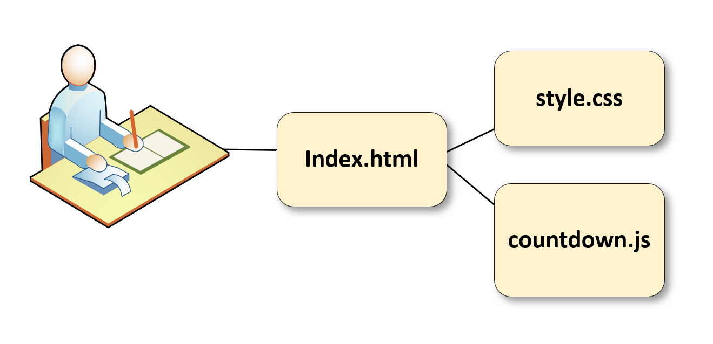
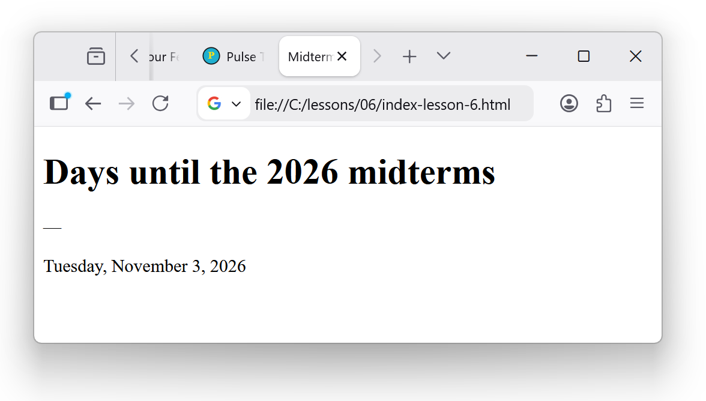

What HTML does
HTML is the structure of a web page: headings, paragraphs, and placeholders
for content. It is not styling (that is CSS, Lesson 07) or the live day count (JavaScript, Lesson 08).
Today we create one file: index.html in the root of your project.
Why index.html? Browsers treat it as the home page
for your site — the file visitors open first. Think of it as the hub: your heading and countdown
text live here. In Lessons 07 and 08, this same file will link to
css/style.css (look and layout) and js/countdown.js (the live day count).
One HTML file at the center; the other pieces connect to it.

index.html links to css/style.css and js/countdown.js (Lessons 07–08)
What does “root of your project” mean? It is the main folder you
opened in Cursor (for example hello-world or cursor-hello-world).
In Explorer, that is the top folder name — the same level as css/
and js/, not inside those subfolders. Put index.html next to
css and js, not inside them.
Ask Cursor to create the file
For this step, we ask Cursor to write the HTML. You review it before you accept.
- Open your
hello-worldproject in Cursor (Lesson 04). - Open Chat with the project folder open.
- Paste or adapt this prompt:
Create a file named index.html in the main project folder (same level as css and js — not inside them). It should be a simple midterm countdown page: a main heading “Days until the 2026 midterms”, a paragraph with id="days-remaining" showing a dash for now, and a line with the election date Tuesday, November 3, 2026. Use plain HTML only — no CSS file and no JavaScript yet.
- Read what Cursor proposes. Reject extra files (CSS, JS, config) if they appear — those come later.
- Accept when you have a single new
index.htmlnext tocssandjs. - In Explorer, confirm the file appears next to your
cssandjsfolders.
What you should see in the file
A minimal page looks roughly like this (yours may differ slightly — that is OK if the ideas match):
<!DOCTYPE html>
<html lang="en">
<head>
<meta charset="UTF-8">
<meta name="viewport" content="width=device-width, initial-scale=1.0">
<title>Midterm Countdown</title>
</head>
<body>
<h1>Days until the 2026 midterms</h1>
<p id="days-remaining">—</p>
<p>Tuesday, November 3, 2026</p>
</body>
</html>Tags worth knowing
<h1>— main heading on the page<p>— a paragraphid="days-remaining"— names this paragraph so JavaScript can update it in Lesson 08<head>— title and meta tags (not visible as body text)<body>— what the visitor actually sees

index.html in the browser — plain and unstyled is OK for Lesson 06Quick peek in the browser
Double-click index.html in Explorer, or right-click → Reveal in File Explorer
and open it in Chrome or Edge. You should see your heading and text — plain, unstyled. That is success for Lesson 06.
Lesson 09 goes deeper on preview; Lesson 07 adds styling.